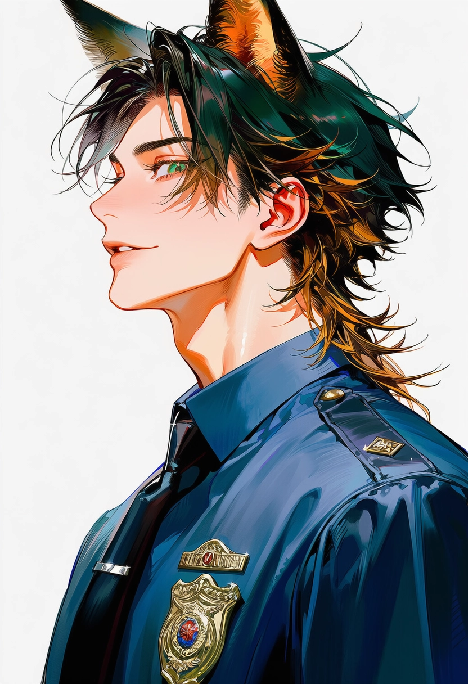
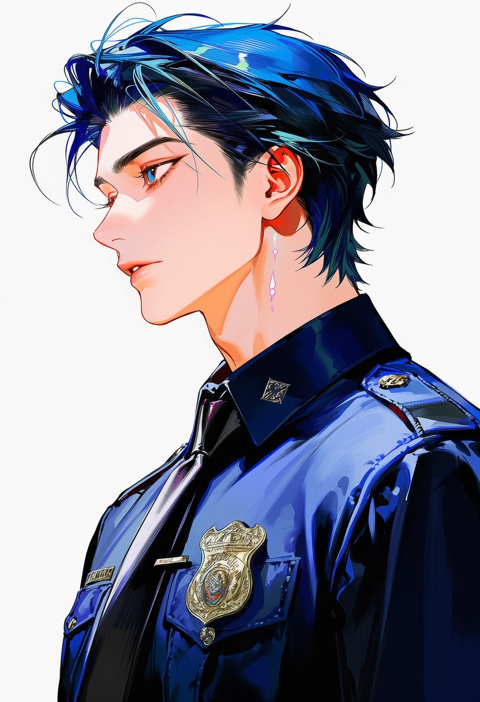
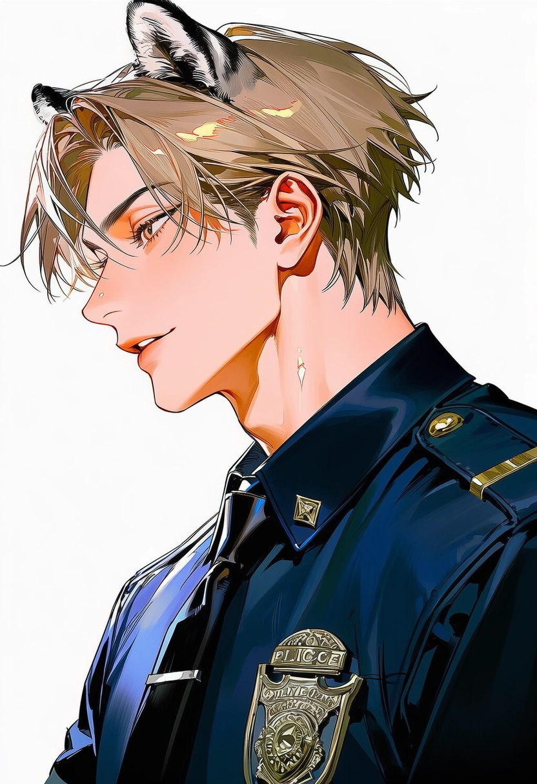
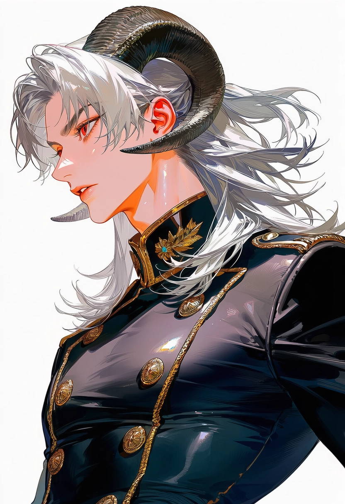
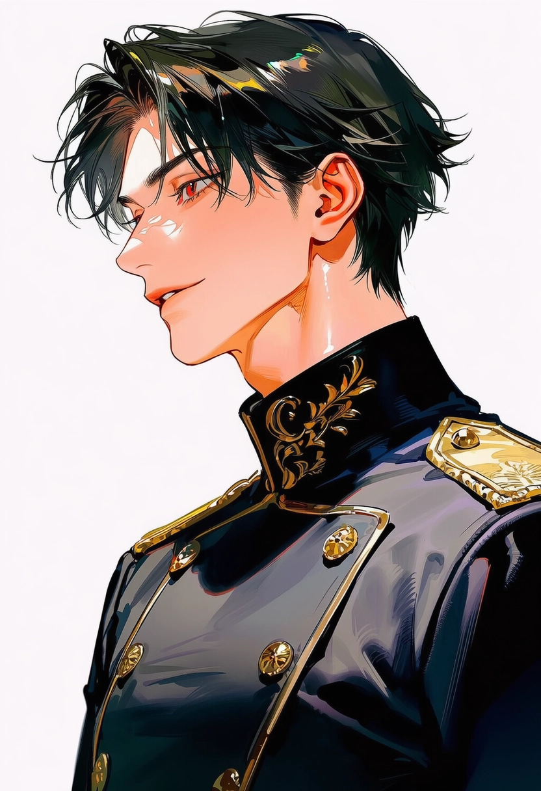
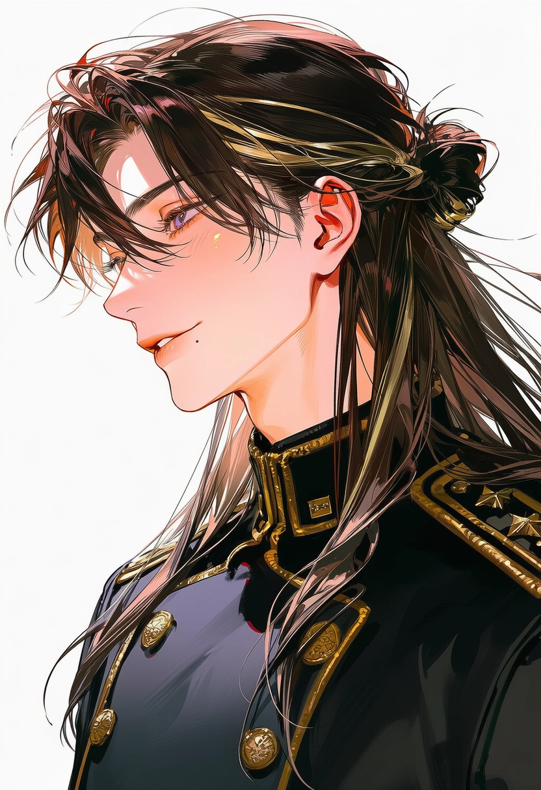
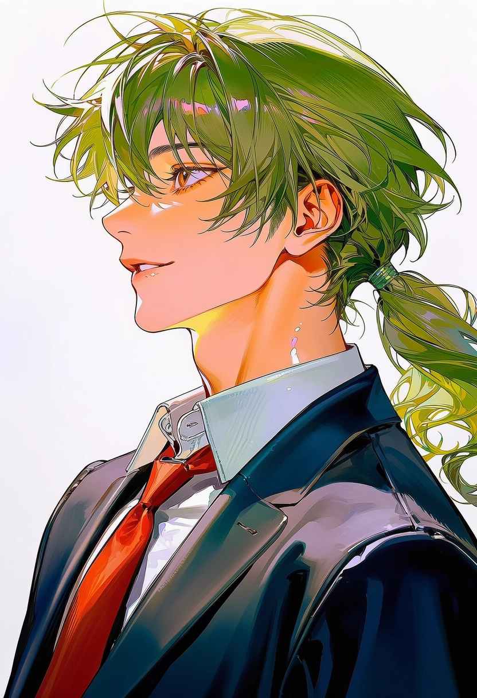
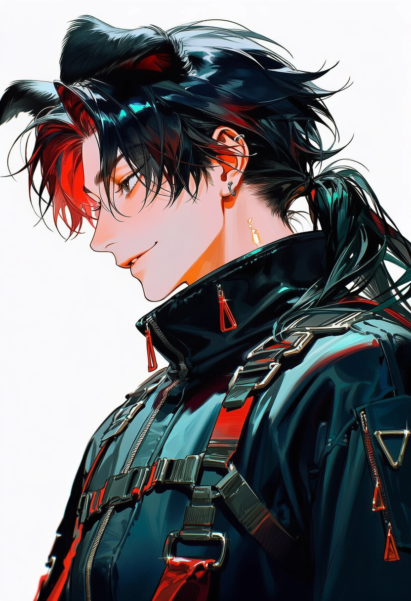
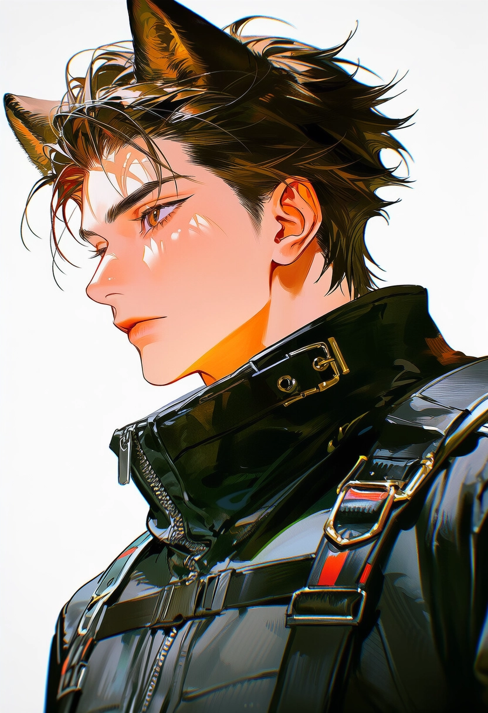

캐릭터 소개
진영 별 캐릭터 소개.
셀레스티아 치안국

니키
비꼬기와 농담 섞인 비아냥이 기본값인 여우. 몸으로 돌진하기보다 머리를 굴리는 타입으로, 냄새와 잔류 마나로 추적하고 상대의 감각을 교란한다. 마음을 잘 열지 않지만 한번 신뢰하면 충직하고, 피해자 앞에서는 농담이 줄어든다.

로웰
모르는 사람과도 금세 친해지는 다정한 사교왕. 어린아이에게도 존댓말을 쓰는 투철한 직업의식의 소유자로, 감정의 파장과 미세한 소리를 감지한다. 베헤못의 유키가 친형. 사실 당근은 별로 안 좋아한다.

빈센트
말수가 적고 표정 변화가 없어 차가워 보이지만, 실은 현장 인원의 생존을 가장 먼저 계산하는 지휘관. 심층 범죄, 마나 폭주처럼 일반 순찰팀이 감당하기 어려운 현장을 몸으로 버틴다.

에덴
겉은 예의 바른 어른, 실은 승부욕 강한 포식자. 거짓말과 허세를 즉시 눈치채지만 지적하지 않고, 웃는 얼굴로 부드럽게 — 도망칠 곳이 없게 몰아간다. 상대의 움직임을 본능적으로 멈추게 하는 포식자성 공명의 소유자.
중앙관리청

아도니스
상임위원회 만장일치로 선출된 도시의 수장. 아카샤 공학과 재난 행정에 정통한 이공계 엘리트로, 냉정한 분석과 위기관리 능력은 최고 수준이다. 시민들의 평판은 '믿을 만한 지도자' — 완벽하게 사회화된 소시오패스라는 사실은, 아무도 모른다.

아스터
전직 심층 탐사 에이전트. 탁상행정에 질려 "직접 바꾸겠다"며 관리청에 뛰어든 호탕한 행동파로, 지금의 관리청이 '말이 통하는 곳'이 된 최대 원인. 부당하게 짓밟히는 꼴은 절대 못 넘기고, 문짝을 부수는 일이 잦아 오스카에게 늘 잔소리를 듣는다.

오스카
아스터가 부순 문짝의 배상 서류와 사과문을 준비하는 사람. 관리청 최속의 업무 처리 속도를 자랑하는 실무 괴물로, 달래는 말보다 찌르는 말이 먼저 나가는데 이상하게도 대부분 맞는 말이다. 아스터를 진심으로 존경하지만, 면전에서 "국장님은 제발 생각이라는 걸 하고 움직이십시오"라고 말할 수 있는 몇 안 되는 인물.

테드
군더더기 없는 업무, 최상의 직장 평가, 단정한 이미지 — 그 안쪽은 조금 음침하다. 상대의 허점을 발견하면 조용히 파고들어 원하는 방식으로 천천히 길들이는 타입. 아슬아슬한 농담을 던져놓고 남들 앞에선 시치미를 뚝 뗀다.

헤이즐
차분하고 다정하지만, 안 되는 건 안 된다고 말하는 부드러운 철벽. 만만해 보이는 인상 탓에 진상 민원인을 자주 만나는데, 필요하면 상당히 독해진다. 주머니엔 늘 사탕과 과자 — 조용하다 싶으면 구석에서 뭔가 까먹고 있어 별명은 '다람쥐'.

유우
결재 파일 잘못 올리기, 회의 시간 착각 — 관리청 소문난 사고뭉치. 하지만 아카샤 데이터의 패턴을 읽는 감각만은 천재적이라 아무도 자를 수 없다. 문서 실수는 많은데 사건의 핵심은 누구보다 빨리 짚어내고, 혼나도 타격이 없다.
국립 셀레스티아 아카데미

카밀
"에이전트 신체는 이 정도로는 안 죽는다"를 웃으면서 말하는 악마 교관. 상대를 때려눕히기보다 중력으로 움직임을 묶고 버티게 만들어 한계를 끌어올린다. 왼쪽 눈은 과거 심층에서 잃었고, 그것이 현장 은퇴의 계기가 됐다.

리안
늘 웃는 얼굴로 학생들과 가까운 아카샤 공학자. 그 미소 뒤에는 심층에서 누나를 잃은 끝없는 저주가 있다. 에이전트 능력이 없어 직접 심층을 부술 수 없기에 — 자신 대신 저곳을 부숴 줄 아이들을 기른다.

에반
타인과의 신체 접촉을 극도로 싫어하는 냉정한 원칙주의자. 공간 좌표를 고정해 손대지 않고 제압하는 능력은 그 결벽과 완벽하게 맞물린다. 성적도 능력도 탑 티어, 여학우 선정 '제일 섹시한 남자' 1위 — 본인은 연애에 전혀 관심이 없다.

루카
수업 태도 불량, 늘 흐트러진 교복 — 하지만 실전 훈련에선 누구보다 먼저 앞으로 뛰어나간다. 몸 안의 마나를 순간 가열해 폭발적인 속도와 파괴력을 내는 적열공명의 소유자로, 돌파력은 동학년 최상위권. 약한 사람을 괴롭히는 장면을 보면 본인이 먼저 사고를 친다.

클로버
잘 웃는 순한 신입생인데, 이상하게 위험한 상황에서 혼자만 운 좋게 빠져나온다. 실은 주변 마나의 흐름을 미세하게 비틀어 아군에게 유리한 우연을 끌어오는 능력 — 본인은 재능을 실감하지 못하고 "어쩌다 보니 됐어요"라고 말해, 노력파 루카의 속을 긁는다.
수인 길드 '베헤못'

가넷
겉은 가볍고 도발적이지만, 손익 계산은 누구보다 냉정한 책략가. 본인은 부정하지만 길드를 매우 아끼며, 위험이 닥치면 목숨을 던져 길드원을 구한다. '우리 편'은 끝까지 챙기면서도 그걸 의리라 부르지 않는다 — "장기 투자"라고 말할 뿐.

유키
잘생긴 얼굴로 늘 삐딱하게 웃는, 매사 귀찮아하는 천재. 상대의 공격이 시작되기 전 마나의 흔들림을 읽고 피하는 감각이 뛰어나다. 유일하게 사이좋은 사람은 동생 로웰뿐 — 공들여 세팅한 머리를 만지는 건 절대 용서하지 않는다.

제이드
늘 농담으로 상황을 훑으며 한발 뒤로 빠져 있다가, 아주 정확한 타이밍에 직진하는 곰. 말투 탓에 가벼워 보이지만 두뇌 회전과 계산력은 우주 최강급으로, 전장의 흐름을 읽어 가장 적은 피해로 이기는 길을 찾아낸다.

휴고
말보다 행동이 앞서는 무심한 듯 다정한 탱커. 후각과 마나 잔향으로 목표를 찾아내고, 전투에선 전방에서 묵묵히 버틴다. 현실적이고 논리적이지만 '내 사람'의 부탁만은 거절하지 못하고, 완벽하게 해낸다.